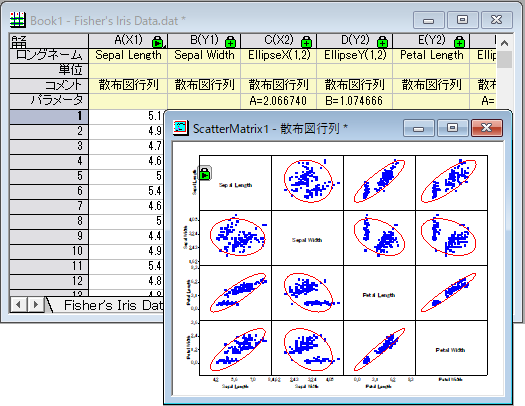

calculate-parameters-of-correlation-ellipse
最終更新日:2017/6/13
Origin 2018から、散布図行列内の相関楕円の長半径および短半径が結果シートにエクスポートされます。作図：2D：散布図行列メニュー、あるいは統計：記述統計：相関係数メニューのどちらで作図した場合も、PlotDataワークシートのパラメータ行に、それぞれの相関楕円のA（長半径）、B（短半径）が表示されます。

必要なOriginのバージョン: Origin 2018 SR0以降
キーワード:相関楕円, 楕円半径, 長半径, 短半径